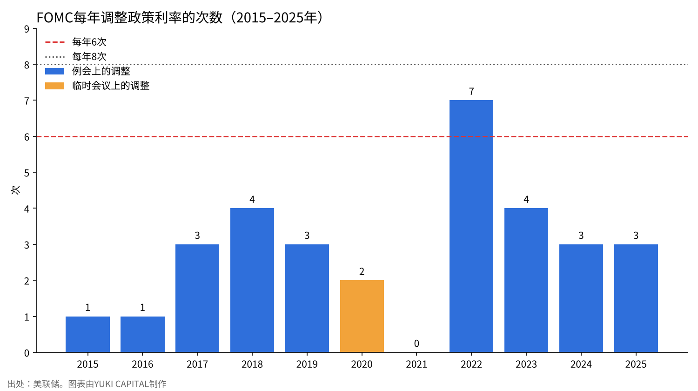
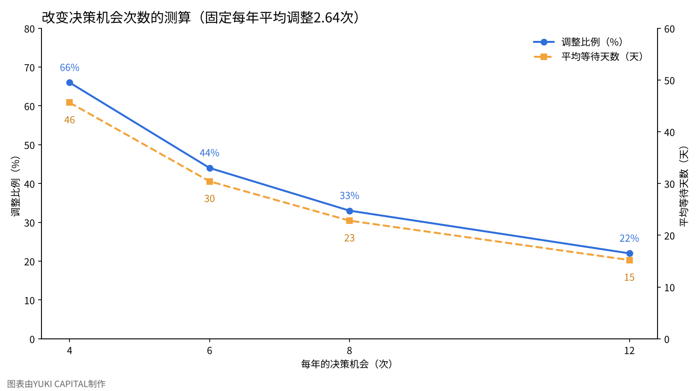

中央银行每年应该决定几次利率？——FOMC的“每年6次”与利率实际变动的次数
美联储主席沃什在2026年10月28日的记者会上表示，将从2027年起减少决定利率的机会。每年8次会议中的1次将用于战略讨论，2028年决策次数可能降到每年6次。
本文只提出一个问题：与过去11年利率实际变动的次数相比，每年6次的决策机会够不够？
我在日本，利用美联储、日本银行、欧洲央行、英国、澳大利亚和加拿大的公开资料以及两项研究，并把会议次数在4到12次之间变动进行敏感性分析来检验。
问题与背景
货币政策会议，是中央银行决定政策利率水平的例行会议。在美国，相当于FOMC（联邦公开市场委员会），政策利率以联邦基金利率的目标区间表示。
据报道，沃什主席在2026年7月的会议上提议改为每年6次、约每两个月一次。理由是确保“判断所用信息积累的时间”和“思考战略的时间”[1][2]。在10月28日的记者会上，他表示2027年将有一次会议不决定利率，2028年决策可能只有6次[1]。8月，7名参议员联名致信反对，主张自1981年以来每年至少举行8次例会[3]。
减少会议的并不只有美国。日本银行从2016年起把每年14次改为8次[4][5]，欧洲央行从2015年起把每月一次改为每6周一次[6]。英格兰银行（BoE）从2016年9月起由12次减为8次[7]，澳大利亚储备银行（RBA）从2024年起由11次减为8次[8]。加拿大银行自2000年起采用每年8次的固定日期制度[9]。
值得注意的是，建议英格兰银行削减会议的正是沃什本人。在2014年为英格兰银行撰写的评估报告中，他认为约每4周一次的频率并非最优。理由是政策效果存在较长的滞后，4周内凑不齐足以改变前景的数据；每月开会会使市场预期超出必要的程度，准备工作也占用职员的时间[10]。
数据与方法
利率调整的次数，根据美联储公布的目标利率调整一览，统计了2015年至2025年共11年[11]。这期间的例会共88次，其中调整利率的有29次。2020年3月的2次调整是在两次例会之间召开的临时会议上作出的，不计入例会的29次。
只统计例会，是因为讨论会议次数的对象是例会。临时会议在任何国家都可以在例会次数之外召开。
作为比较，也统计了日本银行。2016年至2025年的80次会议中，调整短期政策利率的有5次[12]。日本银行2026年6月和9月再次加息，9月的决定使政策利率升至1.25%左右[12]。
日本银行在2016年至2024年间长期实行负利率和收益率曲线控制（同时调控长短期利率的框架），常常在不改变利率水平的情况下调整购买额或操作区间。因此，日本银行的数据仅作参考，不用于与美联储的简单比较。
分析采用两个指标。第一个是需要调整的次数超过当年决策机会的年份有几年。第二个是每次决策机会中调整的比例。公式如下。
调整比例＝年平均调整次数÷每年的决策机会
2026年截至10月底的7次例会中，调整利率的只有9月加息0.25%这1次[11]。例会上的调整11年共29次，年平均约2.64次。假设会议次数变化时，每年需要的调整次数不变。
此外，还给出从冲击发生到下一次决策机会的平均等待天数。若决策机会间隔相等，平均等待天数约为365÷（2×每年的决策机会）。
结果
FOMC调整利率的次数因年份而差异很大。2021年为0次，2022年为7次。11年中，调整超过6次的只有2022年。

以每年6次决策机会回顾过去11年，不够用的只有2022年一年。即便在那一年，只要加大每次的调整幅度，在计算上也能把同样幅度的加息放进6次机会中。2022年实际上有4次加息0.75%[11]。
日本银行在80次会议中只有5次调整了短期利率，约占6%。2017年至2023年一次也没有调整，每年8次会议的大部分都是维持利率的场合。另一方面，2026年截至9月的6次会议中调整了2次，可见在加息阶段，日本银行的调整比例也超过三成[12]。
调整比例在每年8次时约为33%，每年6次时约为44%。这接近Gerlach-Kristen模型的基准情形，即大约一半的会议调整利率[13]。
| 中央银行 | 目前的会议次数 | 变更时间 | 给出的理由 | 出处 |
|---|---|---|---|---|
| 美联储（FOMC） | 每年8次（2027年起1次用于战略讨论） | 2027年起（报道） | 信息积累和思考战略的时间 | [1][2] |
| 日本银行 | 每年8次 | 2016年1月（原为14次） | 与主要央行保持一致（据民间解说） | [4][5] |
| 欧洲央行 | 每6周一次 | 2015年1月（原为每月） | 与准备金维持期相配合 | [6] |
| 英格兰银行 | 每年8次 | 2016年9月（原为12次） | 沃什评估报告的建议 | [7][10] |
| 澳大利亚储备银行 | 每年8次 | 2024年（原为11次） | 延长每次会议以深入讨论 | [8] |
| 加拿大银行 | 每年8次（固定日期） | 2000年11月 | 减少公布时间的不确定性 | [9] |
敏感性分析
把会议次数变为每年4次、6次、8次、12次，计算两个指标和平均等待天数。每年需要的调整次数固定为2.64次。
| 每年的决策机会 | 调整比例 | 调整次数超过机会的年份（11年中） | 到下一次决策的平均等待天数 |
|---|---|---|---|
| 4次 | 约66% | 1年（2022年） | 约46天 |
| 6次 | 约44% | 1年（2022年） | 约30天 |
| 8次 | 约33% | 0年 | 约23天 |
| 12次 | 约22% | 0年 | 约15天 |

每年需要的调整次数本身也做了变动。除2.64次外，还考虑与2018年和2023年相同的4次，以及与2022年相同的7次。在每年6次决策机会下，调整比例分别约为44%、约67%、约117%。超过100%意味着即使每次会议都调整，次数也不够，剩下的办法只有加大每次的调整幅度。每年8次时，同样三种情况分别约为33%、50%、约88%。
从8次减到6次，平均等待天数增加约7天。另一方面，减到4次时，等待天数是8次时的两倍，调整比例升至三次中有两次。会议越接近每次都调整利率，市场就会越看重每一次会议。
讨论
也有相反的看法：会议少了，对突发变化的应对可能会变慢。2020年3月，随着新冠疫情扩散，美联储在2次临时会议上累计降息1.5%[11]。减少会议的国家也都保留了临时会议这一手段。以色列银行在2016年以3比1的表决决定由12次改为8次，投反对票的委员指出了灵活性的丧失[14]。
会议与统计数据发布日的关系也是一个论点。美国的就业数据和消费者物价指数每月发布，若每两个月开一次会，就会在看完两次数据后再作判断。在这一点上，沃什在2014年提出的“4周内凑不齐数据”的理由与这次的提议是一致的[10]。
研究的结论也并非单一方向。Huizinga和Eijffinger指出，降低调整频率会使通胀降低，但经济波动会略微增大[15]。关于英格兰银行的削减，也有专家的评论认为总体上是好的，同时指出6次或许更好[16]。
本文的测算有其局限。第一，固定了调整次数，但会议减少后每次的调整幅度可能变大，次数本身也可能改变。第二，没有统计像日本银行那样通过利率以外的手段调整政策的时期。第三，2027年哪一次会议用于战略讨论，尚未在美联储的一手资料中得到确认。检验答案的标准是：2027年是否会出现每年6次决策不够用的局面，也就是是否会出现召开临时会议的年份。
结论
对照过去11年的记录，每年6次决策机会不够用的只有2022年一年。从8次减到6次，平均等待天数延长约7天，但调整比例接近模型所示的一半左右。减到4次，等待天数和每次会议的分量都会急剧增大。从数字来看，6次可以认为是接近与过去调整频率相容的下限。不过，在2022年那样物价快速变动的年份，就需要加大每次的调整幅度或召开临时会议。
我是这样看的
说起来，看到这次FOMC的结果时，我并没有特别去想什么。我看的是利率和美元兑日元这两个，而不是会议的次数本身。
无论会议是6次还是8次，我的做法都不变。在会议之前，我先决定好不动的条件。这周我已经决定“不把美元换成日元”，所以看到维持利率，判断也没有变。我认为重新审视判断的时候，不是会议次数改变时，而是利率和美元兑日元变动时。
出处
- Yahoo Finance「The Fed just removed a 2027 rate decision, making the remaining 7 even more important」2026年10月28日（报道，补充） https://finance.yahoo.com/economy/article/the-fed-just-removed-a-2027-rate-decision--making-the-remaining-7-even-more-important-194159258.html
- Central Banking「Warsh called for fewer FOMC meetings in July」2026年8月（报道，补充） https://www.centralbanking.com/central-banks/governance/7976682/warsh-called-for-fewer-fomc-meetings-in-july
- InsuranceNewsNet「Gallego sounds alarm on Fed Chair Warsh's plan to scale back interest rate meeting schedule」2026年8月25日（报道，补充） https://insurancenewsnet.com/oarticle/gallego-sounds-alarm-on-fed-chair-warshs-plan-to-scale-back-interest-rate-meeting-schedule
- 日本银行「货币政策会议何时召开」（日文） https://www.boj.or.jp/about/education/oshiete/seisaku/b20.htm
- 第一生命经济研究所 关于日本银行减少会议次数的解说，2015年6月19日（解说，补充，日文） https://www.dlri.co.jp/pdf/macro/2015/kuma150619BOJ.pdf
- European Central Bank「ECB to publish accounts of monetary policy meetings and move to a six-week meeting cycle」2014年7月3日 https://www.ecb.europa.eu/press/pr/date/2014/html/pr140703_1.en.html
- Bank of England「Confirmation of changes to the MPC meeting schedule」2016年5月 https://www.bankofengland.co.uk/news/2016/may/confirmation-of-changes-to-the-mpc-meeting-schedule
- Reserve Bank of Australia, Philip Lowe「The Reserve Bank Review」演讲，2023年7月12日 https://www.rba.gov.au/speeches/2023/sp-gov-2023-07-12.html
- Bank of Canada「Bank of Canada to adopt fixed dates for announcing changes to official interest rate」2000年9月 https://www.bankofcanada.ca/2000/09/bank-canada-adopt-fixed-dates/
- Kevin Warsh「Transparency and the Bank of England's Monetary Policy Committee」Bank of England，2014年12月 https://www.bankofengland.co.uk/-/media/boe/files/news/2014/december/transparency-and-the-boes-mpc-review-by-kevin-warsh.pdf
- Board of Governors of the Federal Reserve System「Open Market Operations」（目标利率调整一览），2026年10月29日浏览 https://www.federalreserve.gov/monetarypolicy/openmarket.htm
- 日本银行「当前的货币政策运营」2026年9月18日（日文） https://www.boj.or.jp/mopo/mpmdeci/mpr_2026/k260918b.pdf
- Petra Gerlach-Kristen「Taking two steps at a time: On the optimal pattern of policy rates」香港大学，2004年 https://hiebs.hku.hk/wp-content/uploads/2020/09/wp1074c.pdf
- Bank of Israel「Summary of the Monetary Committee discussions regarding a change in the frequency of interest rate decisions」2016年 https://boi.org.il/media/az2aqvz2/summary-of-the-monetary-committee-discussions-regarding-a-change-in-the-frequency-of-interest-rate-decisions.pdf
- Harry Huizinga, Sylvester Eijffinger「Should Monetary Policy Be Adjusted Frequently?」CEPR Discussion Paper 2074 https://cepr.org/publications/dp2074
- Charles Goodhart「The impact of changes to Bank of England meetings」World Economic Forum，2015年 https://www.weforum.org/stories/economic-growth/the-impact-of-changes-to-bank-of-england-meetings/
照片：Joshua Woroniecki、Arlind Photography（Unsplash）。图表由YUKI CAPITAL制作
每天的数字和判断，我都记录在X上。